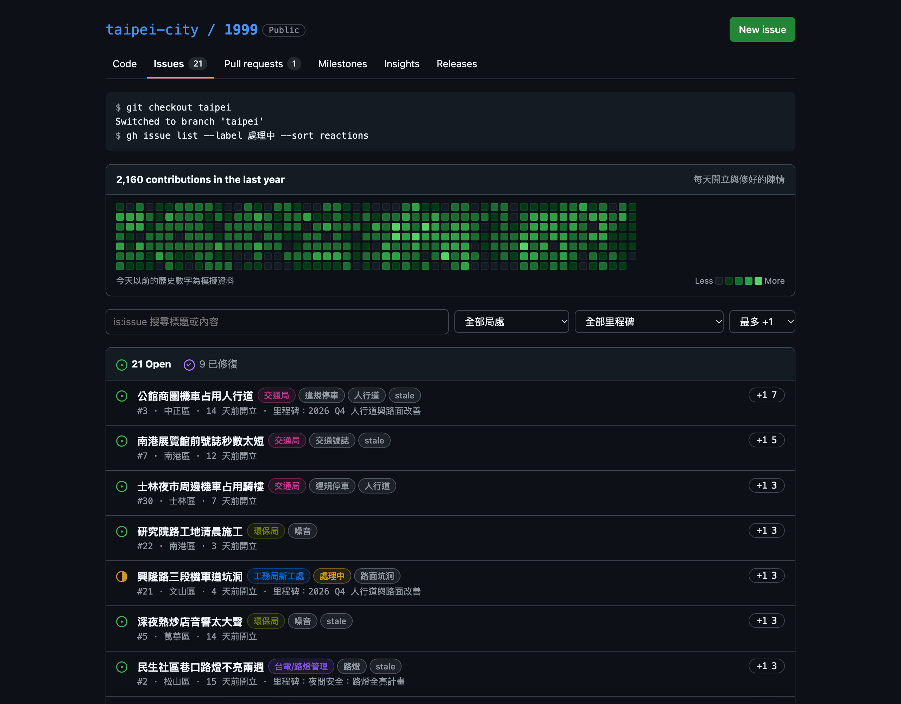

$
台北市，
你給我聽好了
把 1999 陳情，變成一個
GitHub repo
台北市 1999 派工 · 2026 年 1–9 月
0
件
2026-01-01
· data.taipei 真實資料
每天平均
471
件 · 1999 分類 9 大類、136 子類
// 可是，打完 1999 之後
看不到進度
不知道有人報過
不知道該找誰
陳情，像丟進黑洞

taipei-city / 1999
如果台北市
是一個
repo
？
陳情
→
+1
→
修繕單
→
結案
→
市政計畫
→
每週摘要
→
taipei-city / 1999
回報問題
大方向（可略過）
食
住
行
育
樂
醫療
描述問題
已遮蔽 1 項個資
預覽通報
taipei-bot 自動分派
敦化南路二段路口號誌閃黃燈
交通局
交通號誌
大安區
1999 分類
交通號誌異常
理由
號誌故障屬交通局業務
確認送出
#31
已送出 · 即時出現在地圖上
回報問題
預覽通報
taipei-bot：可能是同一件事
#31
敦化南路二段路口號誌閃黃燈
+1 1
大安區 · 交通局 · 3 天前開立
補充到 #31
只按 +1
送出新案件
#31
已 +1 · 大家的 +1 會讓標記長高
大安區
53 里 · 未完成 3 件
全安里
1
›
龍門里
1
›
學府里
1
›
其餘 50 里目前沒有未完成陳情
全安里
大安區
聯絡窗口
里長
撥打
議員
撥打
議員
撥打
議員
撥打
重大事件
#31
敦化南路二段路口號誌閃黃燈
+1 11
回報這個里的問題
敦化南路二段路口號誌閃黃燈
Open
#31 · 大安區 · 交通局 · +1 11
更換號誌控制器
#32
Closes #31
Open
taipei-bot · 分類與局處正確
交通局 · Approved
SLA · 7 天內修好
Merge pull request
各局處處理速度 · SLA 平均 7 天內修好
交通局
2.1 天
SLA
passing
工務局公園處
4.5 天
SLA
passing
環保局
1.9 天
SLA
passing
v2026.43
Latest
台北市 v2026.43：敦化南路二段號誌修復
本週摘要 · taipei-bot 撰寫
交通局 · #31 號誌控制器已更換，路口恢復正常運作。
下一版 · 2 件仍在處理中。
12 / live map
每一件，
都在地圖上
新陳情透過 WebSocket 即時出現； Live 列出今天最新的通報。
Live
敦化南路二段路口號誌閃黃燈
大安區 · 交通局 · 已修復
+1 11
$ git checkout taipei
台北市，
你給我聽好了
｜
市民 1999 通報地圖
看得見 · 找得到人 · 追得到進度
target:
0 open issues
taipei-issue-tracker.labanchen.workers.dev
案件為模擬資料；歷史派工為 data.taipei 真實資料